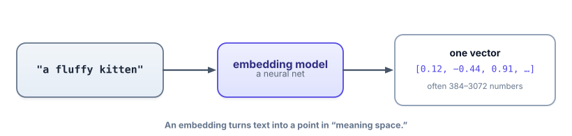
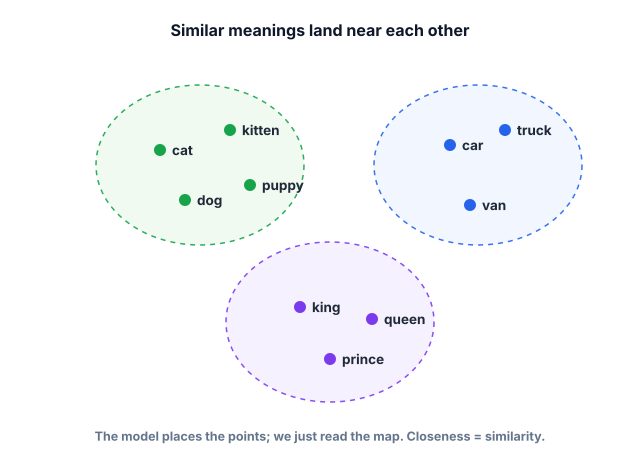
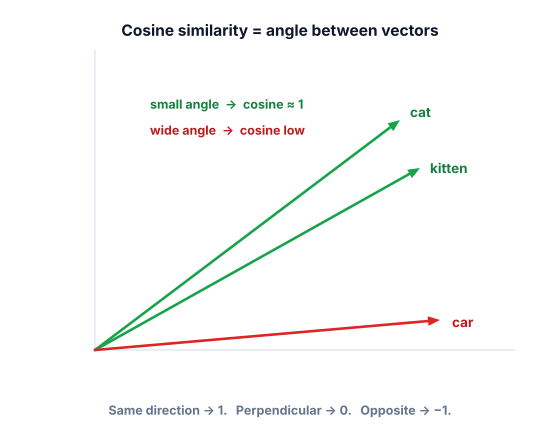

Embeddings: meaning as vectors
This is the idea that makes search, RAG, recommendations, and clustering possible. Once you can turn meaning into numbers, you can do math on meaning — and a huge amount of applied AI is exactly that.
Why embeddings have to exist
Remember token ids from the last lesson: cat might be id 9061 and dog id 5044. Those numbers are just labels — they say nothing about meaning. 9061 isn’t “closer” to 5044 than to 200. So if you wanted to build a search that knows “a small dog” is related to “a puppy,” raw ids are useless: they only match when the exact same word appears.
We need a different kind of number — one where similar meanings get similar values. Then “find related text” becomes “find nearby numbers,” which a computer can do instantly over millions of items. That representation is called an embedding, and it’s the quiet workhorse under semantic search, RAG (Track 3), deduplication, recommendations, and clustering.
An embedding is a list of numbers (a vector) that represents a piece of text’s meaning. Each position in the list is a dimension; real text embeddings have hundreds to thousands of them (e.g. 384, 768, 1536). An embedding model is a neural network trained so that texts with similar meaning get vectors that point in similar directions. You can picture each vector as a point in a high-dimensional “meaning space.”

Here’s the payoff, drawn in 2-D (real space has many more dimensions, but the intuition is identical): things that mean similar stuff cluster together.

Measuring “similar”: cosine similarity
If meaning is direction in space, then two texts are similar when their vectors point the same way. The standard way to measure that is cosine similarity: the cosine of the angle between two vectors. It ranges from +1 (same direction — very similar), through 0 (perpendicular — unrelated), to −1 (opposite). It looks only at direction, not length, which is exactly what we want.

The formula is just the dot product divided by the lengths — you don’t need to memorize it, but seeing it once helps:
# cosine(A, B) = (A · B) / (|A| × |B|)
# A · B = a1*b1 + a2*b2 + ... (the "dot product")
# |A| = sqrt(a1^2 + a2^2 + ...) (the vector's length)Cosine similarity explorer
Pick two words (each has a toy 2-D vector). See the angle between them and the cosine score. Try a similar pair, then a very different one.
Toy 2-D vectors are for intuition. Here’s the real thing with a small, free, open-source embedding model (no API key, runs on Colab’s free tier):
!pip install sentence-transformers
from sentence_transformers import SentenceTransformer, util
model = SentenceTransformer("all-MiniLM-L6-v2") # tiny, free, 384-dim vectors
sentences = [
"How do I reset my password?", # 0
"I forgot my login credentials.", # 1 (same idea, different words)
"What time does the store close?", # 2 (unrelated topic)
]
emb = model.encode(sentences)
print("0 vs 1 (paraphrase):", float(util.cos_sim(emb[0], emb[1]))) # ~0.6–0.7, high
print("0 vs 2 (unrelated):", float(util.cos_sim(emb[0], emb[2]))) # ~0.1, lowNotice sentence 0 and 1 share almost no words, yet score high — because the model captures meaning, not word overlap. That single property is why embedding search beats old keyword search for questions phrased in the user’s own words.
Track 3 is built on what you just learned: embed all your documents once and store the vectors; at question time, embed the question and find the document vectors with the highest cosine similarity. “Find relevant text” becomes “find nearby vectors.” Everything else in RAG is refinements on this core.
- Token ids are arbitrary labels; embeddings are meaningful vectors where similar meaning → similar direction.
- An embedding model turns text into one vector (hundreds–thousands of dimensions) — a point in “meaning space.”
- Cosine similarity measures the angle between vectors: +1 similar, 0 unrelated, −1 opposite.
- Embeddings capture meaning, not word overlap — paraphrases with no shared words still score high.
- This is the engine of semantic search and RAG: store doc vectors, embed the query, retrieve nearest by cosine.
You embed three texts. Which pair will have the highest cosine similarity?
1. Compute the cosine similarity of A = [1, 0] and B = [1, 1] by hand. (Hint: dot = 1; |A| = 1; |B| = √2.) What angle does that correspond to?
2. In Colab, embed five FAQ questions and one user query, then print the most similar FAQ. You just built a mini semantic search.
3. Explain to a teammate why embedding search finds “How do I cancel?” when the user types “I want to stop my subscription,” but keyword search might not.
▸ Show solutions & reasoning
1. cosine = dot / (|A|·|B|) = 1 / (1 · √2) = 1/√2 ≈ 0.707, which is the cosine of 45°. So [1,0] and [1,1] are “moderately similar” — they share a direction component but aren’t identical. Doing one of these by hand cements that cosine really is just the angle.
2. The pattern:
from sentence_transformers import SentenceTransformer, util
m = SentenceTransformer("all-MiniLM-L6-v2")
faqs = ["How do I reset my password?", "How do I cancel my plan?",
"Where are my invoices?", "How do I add a teammate?", "Is there a mobile app?"]
query = "I want to stop my subscription"
fe = m.encode(faqs); qe = m.encode(query)
scores = util.cos_sim(qe, fe)[0]
best = int(scores.argmax())
print(faqs[best]) # -> "How do I cancel my plan?"The query and the right FAQ share no words, yet it wins — because you ranked by meaning. That’s a working semantic search in eight lines.
3. “Cancel” and “stop my subscription” barely overlap as strings, so keyword search (which matches words) can miss it. But they’re close in meaning, so their embeddings point the same way and cosine similarity ranks the cancel FAQ at the top. Embeddings match intent; keywords match spelling.
Why hundreds of dimensions? Meaning is many-faceted: topic, sentiment, formality, tense, entities, and far more. Each dimension can capture a slice of that. With only two dimensions (our pictures), unrelated concepts get forced near each other for lack of room; with hundreds, the model has space to separate “financial bank” from “river bank” from “bank shot in pool.” You can’t visualize 768-D, but every concept from the 2-D pictures — clusters, direction, cosine — carries over unchanged.
Cosine vs dot product vs Euclidean. Three common ways to compare vectors. Cosine looks at angle only (ignores length) and is the default for text similarity. The dot product factors in length too, and is identical to cosine when vectors are normalized to length 1 — which is why many systems normalize embeddings up front and then use the faster dot product.
Euclidean distance measures straight-line distance between points; it ranks similarly to cosine for normalized vectors. For Track 3, the practical rule is: normalize your embeddings, then cosine and dot product agree, and your vector database can use whichever is fastest. The concept you must carry forward is unchanged — closeness in this space means closeness in meaning.
You’ve now got tokens (the units), embeddings (their meaning), and next-token prediction (the engine). The remaining question about the engine is one of capacity: how much can a model hold in mind at once, and how does it decide which earlier words matter? That’s context windows and attention.